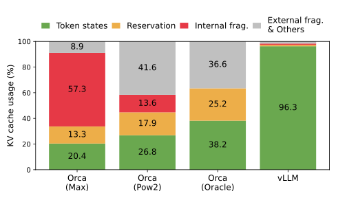
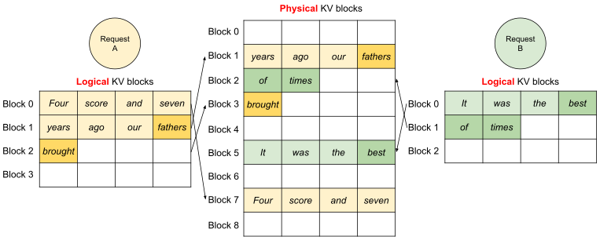
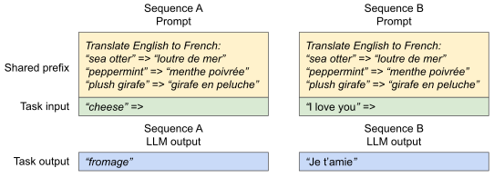
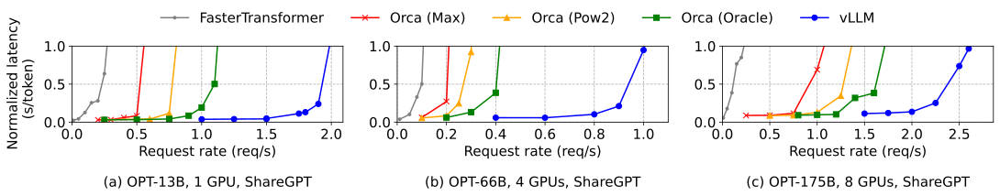
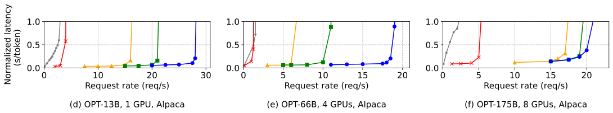
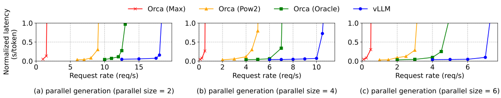
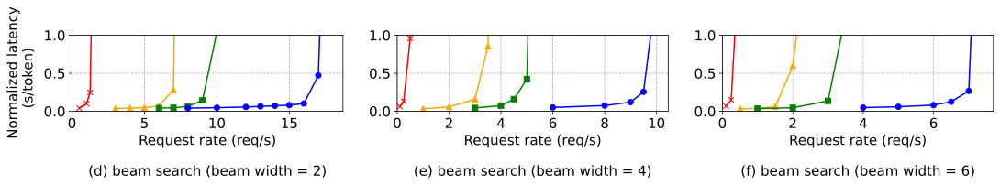

High throughput serving of large language models (LLMs) requires batching sufficiently many requests at a time. However, existing systems struggle because the key-value cache (KV cache) memory for each request is huge and grows and shrinks dynamically. When managed inefficiently, this memory can be significantly wasted by fragmentation and redundant duplication, limiting the batch size. To address this problem, we propose PagedAttention, an attention algorithm inspired by the classical virtual memory and paging techniques in operating systems. On top of it, we build vLLM, an LLM serving system that achieves (1) near-zero waste in KV cache memory and (2) flexible sharing of KV cache within and across requests to further reduce memory usage. Our evaluations show that vLLM improves the throughput of popular LLMs by 2-4\(\times\) with the same level of latency compared to the state-of-the-art systems, such as FasterTransformer and Orca. The improvement is more pronounced with longer sequences, larger models, and more complex decoding algorithms. vLLM’s source code is publicly available at https://github.com/vllm-project/vllm.
1 引言Introduction
GPT (OpenAI, 2023b; Brown et al., 2020)、PaLM (Chowdhery et al., 2022) 等大语言模型（LLM）的出现，催生了编程助手 (Github, 2022; Chen et al., 2021)、通用聊天机器人（chatbot）(OpenAI, 2022; Google, 2023) 等新应用，它们正开始深刻地改变人们的工作和日常生活。许多云服务商 (OpenAI, 2020; Services, 2023) 正竞相以托管服务的形式提供这些应用。然而，运行这些应用的代价十分高昂，需要大量 GPU 等硬件加速器。据近期估算，处理一个 LLM 请求的成本可达传统关键词查询的 10\(\times\) (Reuters, 2023)。成本如此之高，提升 LLM 推理服务（LLM serving）系统的吞吐量（throughput）、进而降低单个请求的成本，就变得越来越重要。
The emergence of large language models (LLMs) like GPT (OpenAI, 2023b; Brown et al., 2020) and PaLM (Chowdhery et al., 2022) have enabled new applications such as programming assistants (Github, 2022; Chen et al., 2021) and universal chatbots (OpenAI, 2022; Google, 2023) that are starting to profoundly impact our work and daily routines. Many cloud companies (OpenAI, 2020; Services, 2023) are racing to provide these applications as hosted services. However, running these applications is very expensive, requiring a large number of hardware accelerators such as GPUs. According to recent estimates, processing an LLM request can be 10\(\times\) more expensive than a traditional keyword query (Reuters, 2023). Given these high costs, increasing the throughput—and hence reducing the cost per request—of LLM serving systems is becoming more important.
At the core of LLMs lies an autoregressive Transformer model (Vaswani et al., 2017). This model generates words (tokens), one at a time, based on the input (prompt) and the previous sequence of the output’s tokens it has generated so far. For each request, this expensive process is repeated until the model outputs a termination token. This sequential generation process makes the workload memory-bound, underutilizing the computation power of GPUs and limiting the serving throughput.
Figure 1.Left:Memory layout when serving an LLM with 13B parameters on NVIDIA A100. The parameters (gray) persist in GPU memory throughout serving. The memory for the KV cache (red) is (de)allocated per serving request. A small amount of memory (yellow) is used ephemerally for activation. Right: vLLM smooths out the rapid growth curve of KV cache memory seen in existing systems (NVIDIA, 2023a; Yu et al., 2022), leading to a notable boost in serving throughput.
Improving the throughput is possible by batching multiple requests together. However, to process many requests in a batch, the memory space for each request should be efficiently managed. For example, Fig. 1 (left) illustrates the memory distribution for a 13B-parameter LLM on an NVIDIA A100 GPU with 40GB RAM. Approximately 65% of the memory is allocated for the model weights, which remain static during serving. Close to 30% of the memory is used to store the dynamic states of the requests. For Transformers, these states consist of the key and value tensors associated with the attention mechanism, commonly referred to as KV cache (Pope et al., 2022), which represent the context from earlier tokens to generate new output tokens in sequence. The remaining small percentage of memory is used for other data, including activations – the ephemeral tensors created when evaluating the LLM. Since the model weights are constant and the activations only occupy a small fraction of the GPU memory, the way the KV cache is managed is critical in determining the maximum batch size. When managed inefficiently, the KV cache memory can significantly limit the batch size and consequently the throughput of the LLM, as illustrated in Fig. 1 (right).
本文发现，现有的 LLM 推理服务系统 (Yu et al., 2022; NVIDIA, 2023a) 未能高效管理 KV 缓存显存。主要原因在于，大多数深度学习框架 (Paszke et al., 2019; Olston et al., 2017) 要求张量存储在连续内存中，因此这些系统也把一个请求的 KV 缓存存放在连续的内存空间里。然而，与传统深度学习负载中的张量不同，KV 缓存有其独特性质：它会随着模型生成新 token 而动态增长和收缩，其生命周期和长度也无法事先得知。这些特性使现有系统的做法在两个方面明显低效：
In this paper, we observe that existing LLM serving systems (Yu et al., 2022; NVIDIA, 2023a) fall short of managing the KV cache memory efficiently. This is mainly because they store the KV cache of a request in contiguous memory space, as most deep learning frameworks (Paszke et al., 2019; Olston et al., 2017) require tensors to be stored in contiguous memory. However, unlike the tensors in the traditional deep learning workloads, the KV cache has unique characteristics: it dynamically grows and shrinks over time as the model generates new tokens, and its lifetime and length are not known a priori. These characteristics make the existing systems’ approach significantly inefficient in two ways:

图 2. 在 §6.2 的实验中，不同 LLM 推理服务系统的平均内存浪费比例。原文图注
Figure 2.Average percentage of memory wastes in different LLM serving systems during the experiment in §6.2.
First, the existing systems (Yu et al., 2022; NVIDIA, 2023a) suffer from internal and external memory fragmentation. To store the KV cache of a request in contiguous space, they pre-allocate a contiguous chunk of memory with the request’s maximum length (e.g., 2048 tokens). This can result in severe internal fragmentation, since the request’s actual length can be much shorter than its maximum length (e.g., Fig. 11). Moreover, even if the actual length is known a priori, the pre-allocation is still inefficient: As the entire chunk is reserved during the request’s lifetime, other shorter requests cannot utilize any part of the chunk that is currently unused. Besides, external memory fragmentation can also be significant, since the pre-allocated size can be different for each request. Indeed, our profiling results in Fig. 2 show that only 20.4% - 38.2% of the KV cache memory is used to store the actual token states in the existing systems.
Second, the existing systems cannot exploit the opportunities for memory sharing. LLM services often use advanced decoding algorithms, such as parallel sampling and beam search, that generate multiple outputs per request. In these scenarios, the request consists of multiple sequences that can partially share their KV cache. However, memory sharing is not possible in the existing systems because the KV cache of the sequences is stored in separate contiguous spaces.
To address the above limitations, we propose PagedAttention, an attention algorithm inspired by the operating system’s (OS) solution to memory fragmentation and sharing: virtual memory with paging. PagedAttention divides the request’s KV cache into blocks, each of which can contain the attention keys and values of a fixed number of tokens. In PagedAttention, the blocks for the KV cache are not necessarily stored in contiguous space. Therefore, we can manage the KV cache in a more flexible way as in OS’s virtual memory: one can think of blocks as pages, tokens as bytes, and requests as processes. This design alleviates internal fragmentation by using relatively small blocks and allocating them on demand. Moreover, it eliminates external fragmentation as all blocks have the same size. Finally, it enables memory sharing at the granularity of a block, across the different sequences associated with the same request or even across the different requests.
基于 PagedAttention，我们构建了 vLLM：一个高吞吐量的分布式 LLM 推理服务引擎，其 KV 缓存显存的浪费接近于零。vLLM 采用块级内存管理和抢占式（preemptive）请求调度，二者均与 PagedAttention 协同设计。vLLM 支持 GPT (Brown et al., 2020)、OPT (Zhang et al., 2022)、LLaMA (Touvron et al., 2023) 等主流 LLM 的多种规模，包括超出单个 GPU 显存容量的模型。在多种模型和负载上的评估表明，与当前最先进的系统 (Yu et al., 2022; NVIDIA, 2023a) 相比，vLLM 将 LLM 服务吞吐量提高了 2-4\(\times\)，且完全不影响模型精度。序列越长、模型越大、解码算法越复杂，提升就越明显（§4.3）。本文的贡献可概括如下：
In this work, we build vLLM, a high-throughput distributed LLM serving engine on top of PagedAttention that achieves near-zero waste in KV cache memory. vLLM uses block-level memory management and preemptive request scheduling that are co-designed with PagedAttention. vLLM supports popular LLMs such as GPT (Brown et al., 2020), OPT (Zhang et al., 2022), and LLaMA (Touvron et al., 2023) with varying sizes, including the ones exceeding the memory capacity of a single GPU. Our evaluations on various models and workloads show that vLLM improves the LLM serving throughput by 2-4\(\times\) compared to the state-of-the-art systems (Yu et al., 2022; NVIDIA, 2023a), without affecting the model accuracy at all. The improvements are more pronounced with longer sequences, larger models, and more complex decoding algorithms (§4.3). In summary, we make the following contributions:
识别了 LLM 推理服务中内存分配面临的挑战，并量化了它们对服务性能的影响。
We identify the challenges in memory allocation in serving LLMs and quantify their impact on serving performance.
We propose PagedAttention, an attention algorithm that operates on KV cache stored in non-contiguous paged memory, which is inspired by the virtual memory and paging in OS.
We evaluate vLLM on various scenarios and demonstrate that it substantially outperforms the previous state-of-the-art solutions such as FasterTransformer (NVIDIA, 2023a) and Orca (Yu et al., 2022).
In this section, we describe the generation and serving procedures of typical LLMs and the iteration-level scheduling used in LLM serving.
2.1 基于 Transformer 的大语言模型Transformer-Based Large Language Models
语言建模的任务是对 token 序列的概率建模，序列记为 \((x_{1},\ldots,x_{n}).\) 由于语言天然具有先后顺序，通常将整个序列的联合概率分解为一系列条件概率的乘积（亦称自回归分解 (Bengio et al., 2000)）：
The task of language modeling is to model the probability of a list of tokens \((x_{1},\ldots,x_{n}).\) Since language has a natural sequential ordering, it is common to factorize the joint probability over the whole sequence as the product of conditional probabilities (a.k.a. autoregressive decomposition (Bengio et al., 2000)):
Transformers (Vaswani et al., 2017) have become the de facto standard architecture for modeling the probability above at a large scale. The most important component of a Transformer-based language model is its self-attention layers. For an input hidden state sequence \((x_{1},\ldots,x_{n})\in\mathbb{R}^{n\times d}\), a self-attention layer first applies linear transformations on each position \(i\) to get the query, key, and value vectors:
Then, the self-attention layer computes the attention score \(a_{ij}\) by multiplying the query vector at one position with all the key vectors before it and compute the output \(o_{i}\) as the weighted average over the value vectors:
除式 (4) 中的计算之外，Transformer 模型的其余组件，包括嵌入层、前馈层、层归一化 (Ba et al., 2016)、残差连接 (He et al., 2016)、输出 logit 的计算，以及式 (2) 中的查询、键、值变换，都是逐位置独立施加的，形式为 \(y_{i}=f(x_{i}).\)
Besides the computation in Eq. 4, all other components in the Transformer model, including the embedding layer, feed-forward layer, layer normalization (Ba et al., 2016), residual connection (He et al., 2016), output logit computation, and the query, key, and value transformation in Eq. 2, are all applied independently position-wise in a form of \(y_{i}=f(x_{i}).\)
2.2 LLM 服务与自回归生成LLM Service & Autoregressive Generation
Once trained, LLMs are often deployed as a conditional generation service (e.g., completion API (OpenAI, 2020) or chatbot (OpenAI, 2022; Google, 2023)). A request to an LLM service provides a list of input prompt tokens \((x_{1},\ldots,x_{n}),\) and the LLM service generates a list of output tokens \((x_{n+1},\ldots,x_{n+T})\) according to Eq. 1. We refer to the concatenation of the prompt and output lists as sequence.
Due to the decomposition in Eq. 1, the LLM can only sample and generate new tokens one by one, and the generation process of each new token depends on all the previous tokens in that sequence, specifically their key and value vectors. In this sequential generation process, the key and value vectors of existing tokens are often cached for generating future tokens, known as KV cache. Note that the KV cache of one token depends on all its previous tokens. This means that the KV cache of the same token appearing at different positions in a sequence will be different.
给定一个请求的 prompt，LLM 服务中的生成计算可以分解为两个阶段：
Given a request prompt, the generation computation in the LLM service can be decomposed into two phases:
The prompt phase takes the whole user prompt \((x_{1},\ldots,x_{n})\) as input and computes the probability of the first new token \(P(x_{n+1}\mid x_{1},\ldots,x_{n})\). During this process, also generates the key vectors \(k_{1},\ldots,k_{n}\) and value vectors \(v_{1},\ldots,v_{n}\). Since prompt tokens \(x_{1},\ldots,x_{n}\) are all known, the computation of the prompt phase can be parallelized using matrix-matrix multiplication operations. Therefore, this phase can efficiently use the parallelism inherent in GPUs.
The autoregressive generation phase generates the remaining new tokens sequentially. At iteration \(t\), the model takes one token \(x_{n+t}\) as input and computes the probability \(P(x_{n+t+1}\mid x_{1},\ldots,x_{n+t})\) with the key vectors \(k_{1},\ldots,k_{n+t}\) and value vectors \(v_{1},\ldots,v_{n+t}\). Note that the key and value vectors at positions \(1\) to \(n+t-1\) are cached at previous iterations, only the new key and value vector \(k_{n+t}\) and \(v_{n+t}\) are computed at this iteration. This phase completes either when the sequence reaches a maximum length (specified by users or limited by LLMs) or when an end-of-sequence (<eos>) token is emitted. The computation at different iterations cannot be parallelized due to the data dependency and often uses matrix-vector multiplication, which is less efficient. As a result, this phase severely underutilizes GPU computation and becomes memory-bound, being responsible for most portion of the latency of a single request.
Figure 3.KV cache memory management in existing systems. Three types of memory wastes – reserved, internal fragmentation, and external fragmentation – exist that prevent other requests from fitting into the memory. The token in each memory slot represents its KV cache. Note the same tokens can have different KV cache when at different positions.
The compute utilization in serving LLMs can be improved by batching multiple requests. Because the requests share the same model weights, the overhead of moving weights is amortized across the requests in a batch, and can be overwhelmed by the computational overhead when the batch size is sufficiently large. However, batching the requests to an LLM service is non-trivial for two reasons. First, the requests may arrive at different times. A naive batching strategy would either make earlier requests wait for later ones or delay the incoming requests until earlier ones finish, leading to significant queueing delays. Second, the requests may have vastly different input and output lengths (Fig. 11). A straightforward batching technique would pad the inputs and outputs of the requests to equalize their lengths, wasting GPU computation and memory.
为解决这一问题，研究者提出了细粒度的批处理机制，例如蜂窝式批处理（cellular batching）(Gao et al., 2018) 和迭代级调度 (Yu et al., 2022)。传统方法在请求级别工作，而这些技术在迭代级别运作：每次迭代结束后，已完成的请求移出批次，新请求随即加入。因此，新请求只需等待一次迭代即可开始处理，而不必等待整个批次完成。此外，借助专门的 GPU 内核（kernel），这些技术无需再填充输入和输出。通过减少排队延迟和填充带来的低效，细粒度批处理机制显著提升了 LLM 推理服务的吞吐量。
To address this problem, fine-grained batching mechanisms, such as cellular batching (Gao et al., 2018) and iteration-level scheduling (Yu et al., 2022), have been proposed. Unlike traditional methods that work at the request level, these techniques operate at the iteration level. After each iteration, completed requests are removed from the batch, and new ones are added. Therefore, a new request can be processed after waiting for a single iteration, not waiting for the entire batch to complete. Moreover, with special GPU kernels, these techniques eliminate the need to pad the inputs and outputs. By reducing the queueing delay and the inefficiencies from padding, the fine-grained batching mechanisms significantly increase the throughput of LLM serving.
Although fine-grained batching reduces the waste of computing and enables requests to be batched in a more flexible way, the number of requests that can be batched together is still constrained by GPU memory capacity, particularly the space allocated to store the KV cache. In other words, the serving system’s throughput is memory-bound. Overcoming this memory-bound requires addressing the following challenges in the memory management:
Large KV cache. The KV Cache size grows quickly with the number of requests. As an example, for the 13B parameter OPT model (Zhang et al., 2022), the KV cache of a single token demands 800 KB of space, calculated as \(2\) (key and value vectors) \(\times\ 5120\) (hidden state size) \(\times\ 40\) (number of layers) \(\times\ 2\) (bytes per FP16). Since OPT can generate sequences up to 2048 tokens, the memory required to store the KV cache of one request can be as much as 1.6 GB. Concurrent GPUs have memory capacities in the tens of GBs. Even if all available memory was allocated to KV cache, only a few tens of requests could be accommodated. Moreover, inefficient memory management can further decrease the batch size, as shown in Fig. 2. Additionally, given the current trends, the GPU’s computation speed grows faster than the memory capacity (Gholami et al., 2021). For example, from NVIDIA A100 to H100, The FLOPS increases by more than 2x, but the GPU memory stays at 80GB maximum. Therefore, we believe the memory will become an increasingly significant bottleneck.
Complex decoding algorithms. LLM services offer a range of decoding algorithms for users to select from, each with varying implications for memory management complexity. For example, when users request multiple random samples from a single input prompt, a typical use case in program suggestion (Github, 2022), the KV cache of the prompt part, which accounts for 12% of the total KV cache memory in our experiment (§6.3), can be shared to minimize memory usage. On the other hand, the KV cache during the autoregressive generation phase should remain unshared due to the different sample results and their dependence on context and position. The extent of KV cache sharing depends on the specific decoding algorithm employed. In more sophisticated algorithms like beam search (Sutskever et al., 2014), different request beams can share larger portions (up to 55% memory saving, see §6.3) of their KV cache, and the sharing pattern evolves as the decoding process advances.
Scheduling for unknown input & output lengths. The requests to an LLM service exhibit variability in their input and output lengths. This requires the memory management system to accommodate a wide range of prompt lengths. In addition, as the output length of a request grows at decoding, the memory required for its KV cache also expands and may exhaust available memory for incoming requests or ongoing generation for existing prompts. The system needs to make scheduling decisions, such as deleting or swapping out the KV cache of some requests from GPU memory.
3.1 现有系统的内存管理Memory Management in Existing Systems
当前深度学习框架 (Paszke et al., 2019; Olston et al., 2017) 中的大多数算子都要求张量存放在连续内存中，因此以往的 LLM 推理服务系统 (Yu et al., 2022; NVIDIA, 2023a) 同样把一个请求在各个位置上的 KV 缓存存储为一个连续张量。又因为 LLM 的输出长度难以预测，这些系统会按请求可能的最大序列长度为其静态分配一块内存，而不考虑请求的实际输入长度或最终输出长度。
Since most operators in current deep learning frameworks (Paszke et al., 2019; Olston et al., 2017) require tensors to be stored in contiguous memory, previous LLM serving systems (Yu et al., 2022; NVIDIA, 2023a) also store the KV cache of one request as a contiguous tensor across the different positions. Due to the unpredictable output lengths from the LLM, they statically allocate a chunk of memory for a request based on the request’s maximum possible sequence length, irrespective of the actual input or eventual output length of the request.
图 3 展示了两个请求：请求 A 的最大可能序列长度为 2048，请求 B 的最大值为 512。现有系统的整块预分配方案有三个主要的内存浪费来源：为未来 token 预留（reserved）的槽位；为可能的最大序列长度超额分配而造成的内部碎片；以及伙伴分配器（buddy allocator）等内存分配器带来的外部碎片。外部碎片永远不会用于存放生成的 token，这一点在服务请求之前就已知晓。内部碎片同样不会被使用，但要等请求完成采样之后才能确认。二者都是纯粹的内存浪费。预留的内存虽然最终会被用上，但在整个请求期间都预留这部分空间（尤其是预留空间较大时），会占用本可用于处理其他请求的空间。我们在图 2 中可视化了实验中的平均内存浪费比例，结果显示，以往系统中真正有效利用的内存可低至 20.4%。
Fig. 3 illustrates two requests: request A with 2048 maximum possible sequence length and request B with a maximum of 512. The chunk pre-allocation scheme in existing systems has three primary sources of memory wastes: reserved slots for future tokens, internal fragmentation due to over-provisioning for potential maximum sequence lengths, and external fragmentation from the memory allocator like the buddy allocator. The external fragmentation will never be used for generated tokens, which is known before serving a request. Internal fragmentation also remains unused, but this is only realized after a request has finished sampling. They are both pure memory waste. Although the reserved memory is eventually used, reserving this space for the entire request’s duration, especially when the reserved space is large, occupies the space that could otherwise be used to process other requests. We visualize the average percentage of memory wastes in our experiments in Fig. 2, revealing that the actual effective memory in previous systems can be as low as 20.4%.
已有工作提出用内存紧缩（compaction）(Wang et al., 2022b) 来应对碎片问题，但由于 KV 缓存体量巨大，在对性能敏感的 LLM 推理服务系统中执行紧缩并不现实。而且即便采用紧缩，在现有内存管理系统中，为每个请求预分配的整块空间仍然会妨碍特定解码算法所需的内存共享。
Although compaction (Wang et al., 2022b) has been proposed as a potential solution to fragmentation, performing compaction in a performance-sensitive LLM serving system is impractical due to the massive KV cache. Even with compaction, the pre-allocated chunk space for each request prevents memory sharing specific to decoding algorithms in existing memory management systems.
In this work, we develop a new attention algorithm, PagedAttention, and build an LLM serving engine, vLLM, to tackle the challenges outlined in §3. The architecture of vLLM is shown in Fig. 4. vLLM adopts a centralized scheduler to coordinate the execution of distributed GPU workers. The KV cache manager effectively manages the KV cache in a paged fashion, enabled by PagedAttention. Specifically, the KV cache manager manages the physical KV cache memory on the GPU workers through the instructions sent by the centralized scheduler.
Next, We describe the PagedAttention algorithm in §4.1. With that, we show the design of the KV cache manager in §4.2 and how it facilitates PagedAttention in §4.3, respectively. Then, we show how this design facilitates effective memory management for various decoding methods (§4.4) and handles the variable length input and output sequences (§4.5). Finally, we show how the system design of vLLM works in a distributed setting (§4.6).
To address the memory challenges in §3, we introduce PagedAttention, an attention algorithm inspired by the classic idea of paging (Kilburn et al., 1962) in operating systems. Unlike the traditional attention algorithms, PagedAttention allows storing continuous keys and values in non-contiguous memory space. Specifically, PagedAttention partitions the KV cache of each sequence into KV blocks. Each block contains the key and value vectors for a fixed number of tokens,(Footnote: 1 In Transformer, each token has a set of key and value vectors across layers and attention heads within a layer. All the key and value vectors can be managed together within a single KV block, or the key and value vectors at different heads and layers can each have a separate block and be managed in separate block tables. The two designs have no performance difference and we choose the second one for easy implementation.) which we denote as KV block size (\(B\)). Denote the key block \(K_{j}=(k_{(j-1)B+1},\ldots,k_{jB})\) and value block \(V_{j}=(v_{(j-1)B+1},\ldots,v_{jB}).\) The attention computation in Eq. 4 can be transformed into the following block-wise computation:
During the attention computation, the PagedAttention kernel identifies and fetches different KV blocks separately. We show an example of PagedAttention in Fig. 5: The key and value vectors are spread across three blocks, and the three blocks are not contiguous on the physical memory. At each time, the kernel multiplies the query vector \(q_{i}\) of the query token (“forth”) and the key vectors \(K_{j}\) in a block (e.g., key vectors of “Four score and seven” for block 0) to compute the attention score \(A_{ij},\) and later multiplies \(A_{ij}\) with the value vectors \(V_{j}\) in a block to derive the final attention output \(o_{i}.\)
In summary, the PagedAttention algorithm allows the KV blocks to be stored in non-contiguous physical memory, which enables more flexible paged memory management in vLLM.
The key idea behind vLLM’s memory manager is analogous to the virtual memory (Kilburn et al., 1962) in operating systems. OS partitions memory into fixed-sized pages and maps user programs’ logical pages to physical pages. Contiguous logical pages can correspond to non-contiguous physical memory pages, allowing user programs to access memory as though it were contiguous. Moreover, physical memory space needs not to be fully reserved in advance, enabling the OS to dynamically allocate physical pages as needed. vLLM uses the ideas behind virtual memory to manage the KV cache in an LLM service. Enabled by PagedAttention, we organize the KV cache as fixed-size KV blocks, like pages in virtual memory.
A request’s KV cache is represented as a series of logical KV blocks, filled from left to right as new tokens and their KV cache are generated. The last KV block’s unfilled positions are reserved for future generations. On GPU workers, a block engine allocates a contiguous chunk of GPU DRAM and divides it into physical KV blocks (this is also done on CPU RAM for swapping; see §4.5). The KV block manager also maintains block tables—the mapping between logical and physical KV blocks of each request. Each block table entry records the corresponding physical blocks of a logical block and the number of filled positions. Separating logical and physical KV blocks allows vLLM to dynamically grow the KV cache memory without reserving it for all positions in advance, which eliminates most memory waste in existing systems, as in Fig. 2.
4.3 基于 PagedAttention 与 vLLM 的解码Decoding with PagedAttention and vLLM
Next, we walk through an example, as in Fig. 6, to demonstrate how vLLM executes PagedAttention and manages the memory during the decoding process of a single input sequence: ① As in OS’s virtual memory, vLLM does not require reserving the memory for the maximum possible generated sequence length initially. Instead, it reserves only the necessary KV blocks to accommodate the KV cache generated during prompt computation. In this case, The prompt has 7 tokens, so vLLM maps the first 2 logical KV blocks (0 and 1) to 2 physical KV blocks (7 and 1, respectively). In the prefill step, vLLM generates the KV cache of the prompts and the first output token with a conventional self-attention algorithm (e.g., (Dao et al., 2022)). vLLM then stores the KV cache of the first 4 tokens in logical block 0 and the following 3 tokens in logical block 1. The remaining slot is reserved for the subsequent autoregressive generation phase. ② In the first autoregressive decoding step, vLLM generates the new token with the PagedAttention algorithm on physical blocks 7 and 1. Since one slot remains available in the last logical block, the newly generated KV cache is stored there, and the block table’s #filled record is updated. ③ At the second decoding step, as the last logical block is full, vLLM stores the newly generated KV cache in a new logical block; vLLM allocates a new physical block (physical block 3) for it and stores this mapping in the block table.
Globally, for each decoding iteration, vLLM first selects a set of candidate sequences for batching (more in §4.5), and allocates the physical blocks for the newly required logical blocks. Then, vLLM concatenates all the input tokens of the current iteration (i.e., all tokens for prompt phase requests and the latest tokens for generation phase requests) as one sequence and feeds it into the LLM. During LLM’s computation, vLLM uses the PagedAttention kernel to access the previous KV cache stored in the form of logical KV blocks and saves the newly generated KV cache into the physical KV blocks. Storing multiple tokens within a KV block (block size > 1) enables the PagedAttention kernel to process the KV cache across more positions in parallel, thus increasing the hardware utilization and reducing latency. However, a larger block size also increases memory fragmentation. We study the effect of block size in §7.2.
Again, vLLM dynamically assigns new physical blocks to logical blocks as more tokens and their KV cache are generated. As all the blocks are filled from left to right and a new physical block is only allocated when all previous blocks are full, vLLM limits all the memory wastes for a request within one block, so it can effectively utilize all the memory, as shown in Fig. 2. This allows more requests to fit into memory for batching—hence improving the throughput. Once a request finishes its generation, its KV blocks can be freed to store the KV cache of other requests. In Fig. 7, we show an example of vLLM managing the memory for two sequences. The logical blocks of the two sequences are mapped to different physical blocks within the space reserved by the block engine in GPU workers. The neighboring logical blocks of both sequences do not need to be contiguous in physical GPU memory and the space of physical blocks can be effectively utilized by both sequences.

图 7. 在 vLLM 中同时存储两个请求的 KV 缓存。原文图注
Figure 7.Storing the KV cache of two requests at the same time in vLLM.
4.4 推广到其他解码场景Application to Other Decoding Scenarios
§4.3 shows how PagedAttention and vLLM handle basic decoding algorithms, such as greedy decoding and sampling, that take one user prompt as input and generate a single output sequence. In many successful LLM applications (Github, 2022; OpenAI, 2020), an LLM service must offer more complex decoding scenarios that exhibit complex accessing patterns and more opportunities for memory sharing. We show the general applicability of vLLM on them in this section.
Parallel sampling. In LLM-based program assistants (Chen et al., 2021; Github, 2022), an LLM generates multiple sampled outputs for a single input prompt; users can choose a favorite output from various candidates. So far we have implicitly assumed that a request generates a single sequence. In the remainder of this paper, we assume the more general case in which a request generates multiple sequences. In parallel sampling, one request includes multiple samples sharing the same input prompt, allowing the KV cache of the prompt to be shared as well. Via its PagedAttention and paged memory management, vLLM can realize this sharing easily and save memory.
Fig. 8 shows an example of parallel decoding for two outputs. Since both outputs share the same prompt, we only reserve space for one copy of the prompt’s state at the prompt phase; the logical blocks for the prompts of both sequences are mapped to the same physical blocks: the logical block 0 and 1 of both sequences are mapped to physical blocks 7 and 1, respectively. Since a single physical block can be mapped to multiple logical blocks, we introduce a reference count for each physical block. In this case, the reference counts for physical blocks 7 and 1 are both 2. At the generation phase, the two outputs sample different output tokens and need separate storage for KV cache. vLLM implements a copy-on-write mechanism at the block granularity for the physical blocks that need modification by multiple sequences, similar to the copy-on-write technique in OS virtual memory (e.g., when forking a process). Specifically, in Fig. 8, when sample A1 needs to write to its last logical block (logical block 1), vLLM recognizes that the reference count of the corresponding physical block (physical block 1) is greater than 1; it allocates a new physical block (physical block 3), instructs the block engine to copy the information from physical block 1, and decreases the reference count to 1. Next, when sample A2 writes to physical block 1, the reference count is already reduced to 1; thus A2 directly writes its newly generated KV cache to physical block 1.
In summary, vLLM enables the sharing of most of the space used to store the prompts’ KV cache across multiple output samples, with the exception of the final logical block, which is managed by a copy-on-write mechanism. By sharing physical blocks across multiple samples, memory usage can be greatly reduced, especially for long input prompts.
Beam search. In LLM tasks like machine translation (Wu et al., 2016), the users expect the top-\(k\) most appropriate translations output by the LLM. Beam search (Sutskever et al., 2014) is widely used to decode the most probable output sequence from an LLM, as it mitigates the computational complexity of fully traversing the sample space. The algorithm relies on the beam width parameter \(k\), which determines the number of top candidates retained at every step. During decoding, beam search expands each candidate sequence in the beam by considering all possible tokens, computes their respective probabilities using the LLM, and retains the top-\(k\) most probable sequences out of \(k\cdot|V|\) candidates, where \(|V|\) is the vocabulary size.
Unlike parallel decoding, beam search facilities sharing not only the initial prompt blocks but also other blocks across different candidates, and the sharing patterns dynamically change as the decoding process advances, similar to the process tree in the OS created by compound forks. Fig. 9 shows how vLLM manages the KV blocks for a beam search example with \(k=4\). Prior to the iteration illustrated as the dotted line, each candidate sequence has used 4 full logical blocks. All beam candidates share the first block 0 (i.e., prompt). Candidate 3 digresses from others from the second block. Candidates 0-2 share the first 3 blocks and diverge at the fourth block. At subsequent iterations, the top-4 probable candidates all originate from candidates 1 and 2. As the original candidates 0 and 3 are no longer among the top candidates, their logical blocks are freed, and the reference counts of corresponding physical blocks are reduced. vLLM frees all physical blocks whose reference counts reach 0 (blocks 2, 4, 5, 8). Then, vLLM allocates new physical blocks (blocks 9-12) to store the new KV cache from the new candidates. Now, all candidates share blocks 0, 1, 3; candidates 0 and 1 share block 6, and candidates 2 and 3 further share block 7.
Previous LLM serving systems require frequent memory copies of the KV cache across the beam candidates. For example, in the case shown in Fig. 9, after the dotted line, candidate 3 would need to copy a large portion of candidate 2’s KV cache to continue generation. This frequent memory copy overhead is significantly reduced by vLLM’s physical block sharing. In vLLM, most blocks of different beam candidates can be shared. The copy-on-write mechanism is applied only when the newly generated tokens are within an old shared block, as in parallel decoding. This involves only copying one block of data.
共享前缀。LLM 用户通常会提供一段（较长的）任务描述，其中包括指令以及示例输入和输出，亦称系统 prompt（system prompt）(OpenAI, 2023a)。这段描述与实际的任务输入拼接，构成请求的 prompt，LLM 再基于完整的 prompt 生成输出。图 10 给出了一个例子。此外，还可以通过 prompt 工程进一步调优共享前缀（shared prefix），以提高下游任务的准确率 (Li and Liang, 2021; Lester et al., 2021)。
Shared prefix. Commonly, the LLM user provides a (long) description of the task including instructions and example inputs and outputs, also known as system prompt (OpenAI, 2023a). The description is concatenated with the actual task input to form the prompt of the request. The LLM generates outputs based on the full prompt. Fig. 10 shows an example. Moreover, the shared prefix can be further tuned, via prompt engineering, to improve the accuracy of the downstream tasks (Li and Liang, 2021; Lester et al., 2021).
For this type of application, many user prompts share a prefix, thus the LLM service provider can store the KV cache of the prefix in advance to reduce the redundant computation spent on the prefix. In vLLM, this can be conveniently achieved by reserving a set of physical blocks for a set of predefined shared prefixes by the LLM service provider, as how OS handles shared library across processes. A user input prompt with the shared prefix can simply map its logical blocks to the cached physical blocks (with the last block marked copy-on-write). The prompt phase computation only needs to execute on the user’s task input.

图 10. 机器翻译的共享 prompt 示例。示例取自 (Brown et al., 2020)。原文图注
Figure 10.Shared prompt example for machine translation. The examples are adopted from (Brown et al., 2020).
混合解码方法。前面讨论的各种解码方法呈现出各不相同的内存共享与访问模式。尽管如此，vLLM 仍能同时处理解码偏好不同的请求，而现有系统无法高效做到这一点。这是因为 vLLM 通过一个把逻辑块转换为物理块的公共映射层，屏蔽了不同序列之间复杂的内存共享。LLM 及其执行内核只看到每个序列的物理块 ID 列表，无需处理序列之间的共享模式。与现有系统相比，这种方法为采样需求不同的请求扩大了批处理的机会，最终提升了系统的整体吞吐量。
Mixed decoding methods. The decoding methods discussed earlier exhibit diverse memory sharing and accessing patterns. Nonetheless, vLLM facilitates the simultaneous processing of requests with different decoding preferences, which existing systems cannot efficiently do. This is because vLLM conceals the complex memory sharing between different sequences via a common mapping layer that translates logical blocks to physical blocks. The LLM and its execution kernel only see a list of physical block IDs for each sequence and do not need to handle sharing patterns across sequences. Compared to existing systems, this approach broadens the batching opportunities for requests with different sampling requirements, ultimately increasing the system’s overall throughput.
When the request traffic surpasses the system’s capacity, vLLM must prioritize a subset of requests. In vLLM, we adopt the first-come-first-serve (FCFS) scheduling policy for all requests, ensuring fairness and preventing starvation. When vLLM needs to preempt requests, it ensures that the earliest arrived requests are served first and the latest requests are preempted first.
LLM services face a unique challenge: the input prompts for an LLM can vary significantly in length, and the resulting output lengths are not known a priori, contingent on both the input prompt and the model. As the number of requests and their outputs grow, vLLM can run out of the GPU’s physical blocks to store the newly generated KV cache. There are two classic questions that vLLM needs to answer in this context: (1) Which blocks should it evict? (2) How to recover evicted blocks if needed again? Typically, eviction policies use heuristics to predict which block will be accessed furthest in the future and evict that block. Since in our case we know that all blocks of a sequence are accessed together, we implement an all-or-nothing eviction policy, i.e., either evict all or none of the blocks of a sequence. Furthermore, multiple sequences within one request (e.g., beam candidates in one beam search request) are gang-scheduled as a sequence group. The sequences within one sequence group are always preempted or rescheduled together due to potential memory sharing across those sequences. To answer the second question of how to recover an evicted block, we consider two techniques:
换出。这是大多数虚拟内存实现所采用的经典技术，即把被驱逐的页复制到磁盘上的交换空间。在 vLLM 中，我们把被驱逐的块复制到 CPU 内存。如图 4 所示，除 GPU 块分配器外，vLLM 还包含一个 CPU 块分配器，负责管理换出到 CPU 内存的物理块。当 vLLM 没有空闲物理块可分配给新 token 时，它会选出一组序列加以驱逐，并将其 KV 缓存传输到 CPU。一旦 vLLM 抢占了某个序列并驱逐其块，就会停止接收新请求，直到所有被抢占的序列都完成为止。每当一个请求完成，其块便从内存中释放，被抢占序列的块则被换回，以继续处理该序列。注意，在这一设计下，换出到 CPU 内存的块数永远不会超过 GPU 显存中物理块的总数，因此 CPU 内存上的交换空间以分配给 KV 缓存的 GPU 显存为上限。
Swapping. This is the classic technique used by most virtual memory implementations which copy the evicted pages to a swap space on the disk. In our case, we copy evicted blocks to the CPU memory. As shown in Fig. 4, besides the GPU block allocator, vLLM includes a CPU block allocator to manage the physical blocks swapped to CPU RAM. When vLLM exhausts free physical blocks for new tokens, it selects a set of sequences to evict and transfer their KV cache to the CPU. Once it preempts a sequence and evicts its blocks, vLLM stops accepting new requests until all preempted sequences are completed. Once a request completes, its blocks are freed from memory, and the blocks of a preempted sequence are brought back in to continue the processing of that sequence. Note that with this design, the number of blocks swapped to the CPU RAM never exceeds the number of total physical blocks in the GPU RAM, so the swap space on the CPU RAM is bounded by the GPU memory allocated for the KV cache.
Recomputation. In this case, we simply recompute the KV cache when the preempted sequences are rescheduled. Note that recomputation latency can be significantly lower than the original latency, as the tokens generated at decoding can be concatenated with the original user prompt as a new prompt—their KV cache at all positions can be generated in one prompt phase iteration.
换出与重计算的性能取决于 CPU 内存与 GPU 显存之间的带宽以及 GPU 的算力。我们将在 §7.3 中考察换出与重计算的速度。
The performances of swapping and recomputation depend on the bandwidth between CPU RAM and GPU memory and the computation power of the GPU. We examine the speeds of swapping and recomputation in §7.3.
4.6 分布式执行Distributed Execution
许多 LLM 的参数规模超出了单个 GPU 的容量 (Brown et al., 2020; Chowdhery et al., 2022)。因此，需要将它们切分到多个分布式 GPU 上，以模型并行（model parallelism）的方式执行 (Zheng et al., 2022; Li et al., 2023)。这就要求内存管理器能够处理分布式内存。vLLM 支持 Transformer 上广泛采用的 Megatron-LM 式张量模型并行（tensor model parallelism）策略 (Shoeybi et al., 2019)，因而在分布式环境下同样有效。该策略遵循 SPMD（单程序多数据，Single Program Multiple Data）执行模式：线性层被切分以执行分块矩阵乘法，各 GPU 通过 all-reduce 操作不断同步中间结果。具体而言，注意力算子沿注意力头维度切分，每个 SPMD 进程负责多头注意力中的一部分注意力头。
Many LLMs have parameter sizes exceeding the capacity of a single GPU (Brown et al., 2020; Chowdhery et al., 2022). Therefore, it is necessary to partition them across distributed GPUs and execute them in a model parallel fashion (Zheng et al., 2022; Li et al., 2023). This calls for a memory manager capable of handling distributed memory. vLLM is effective in distributed settings by supporting the widely used Megatron-LM style tensor model parallelism strategy on Transformers (Shoeybi et al., 2019). This strategy adheres to an SPMD (Single Program Multiple Data) execution schedule, wherein the linear layers are partitioned to perform block-wise matrix multiplication, and the the GPUs constantly synchronize intermediate results via an all-reduce operation. Specifically, the attention operator is split on the attention head dimension, each SPMD process takes care of a subset of attention heads in multi-head attention.
We observe that even with model parallel execution, each model shard still processes the same set of input tokens, thus requiring the KV Cache for the same positions. Therefore, vLLM features a single KV cache manager within the centralized scheduler, as in Fig. 4. Different GPU workers share the manager, as well as the mapping from logical blocks to physical blocks. This common mapping allows GPU workers to execute the model with the physical blocks provided by the scheduler for each input request. Although each GPU worker has the same physical block IDs, a worker only stores a portion of the KV cache for its corresponding attention heads.
在每一步中，调度器首先为批内的每个请求准备包含输入 token ID 的消息，以及每个请求的块表。接着，调度器将这一控制消息广播给各 GPU worker。随后，GPU worker 开始用输入 token ID 执行模型。在注意力层中，GPU worker 根据控制消息中的块表读取 KV 缓存。执行过程中，GPU worker 通过 all-reduce 通信原语同步中间结果，无需调度器协调，与 (Shoeybi et al., 2019) 中的做法一致。最后，GPU worker 将本次迭代采样得到的 token 发回调度器。总之，GPU worker 无需就内存管理彼此同步，因为它们只需在每次解码迭代开始时，随本步输入一并接收全部内存管理信息。
In each step, the scheduler first prepares the message with input token IDs for each request in the batch, as well as the block table for each request. Next, the scheduler broadcasts this control message to the GPU workers. Then, the GPU workers start to execute the model with the input token IDs. In the attention layers, the GPU workers read the KV cache according to the block table in the control message. During execution, the GPU workers synchronize the intermediate results with the all-reduce communication primitive without the coordination of the scheduler, as in (Shoeybi et al., 2019). In the end, the GPU workers send the sampled tokens of this iteration back to the scheduler. In summary, GPU workers do not need to synchronize on memory management as they only need to receive all the memory management information at the beginning of each decoding iteration along with the step inputs.
5 实现Implementation
表 1. 模型规模与服务器配置。
模型规模
13B
66B
175B
GPU
A100
4\(\times\)A100
8\(\times\)A100-80GB
GPU 显存总量
40 GB
160 GB
640 GB
参数大小
26 GB
132 GB
346 GB
KV 缓存可用显存
12 GB
21 GB
264 GB
KV 缓存槽位最大数
15.7K
9.7K
60.1K
vLLM 是一个端到端的推理服务系统，由 FastAPI (FastAPI, 2023) 前端和基于 GPU 的推理引擎组成。前端扩展了 OpenAI API (OpenAI, 2020) 接口，允许用户为每个请求自定义采样参数，例如最大序列长度和束宽 \(k\)。vLLM 引擎由 8.5K 行 Python 代码和 2K 行 C++/CUDA 代码写成。调度器、块管理器（block manager）等控制相关组件用 Python 开发，PagedAttention 等关键操作则使用定制的 CUDA 内核。模型执行器方面，我们基于 PyTorch (Paszke et al., 2019) 和 Transformers (Wolf et al., 2020) 实现了 GPT (Brown et al., 2020)、OPT (Zhang et al., 2022)、LLaMA (Touvron et al., 2023) 等主流 LLM。分布式 GPU worker 之间的张量通信使用 NCCL (NVIDIA, 2023b)。
vLLM is an end-to-end serving system with a FastAPI (FastAPI, 2023) frontend and a GPU-based inference engine. The frontend extends the OpenAI API (OpenAI, 2020) interface, allowing users to customize sampling parameters for each request, such as the maximum sequence length and the beam width \(k\). The vLLM engine is written in 8.5K lines of Python and 2K lines of C++/CUDA code. We develop control-related components including the scheduler and the block manager in Python while developing custom CUDA kernels for key operations such as PagedAttention. For the model executor, we implement popular LLMs such as GPT (Brown et al., 2020), OPT (Zhang et al., 2022), and LLaMA (Touvron et al., 2023) using PyTorch (Paszke et al., 2019) and Transformers (Wolf et al., 2020). We use NCCL (NVIDIA, 2023b) for tensor communication across the distributed GPU workers.
Since PagedAttention introduces memory access patterns that are not efficiently supported by existing systems, we develop several GPU kernels for optimizing it. (1) Fused reshape and block write. In every Transformer layer, the new KV cache are split into blocks, reshaped to a memory layout optimized for block read, then saved at positions specified by the block table. To minimize kernel launch overheads, we fuse them into a single kernel. (2) Fusing block read and attention. We adapt the attention kernel in FasterTransformer (NVIDIA, 2023a) to read KV cache according to the block table and perform attention operations on the fly. To ensure coalesced memory access, we assign a GPU warp to read each block. Moreover, we add support for variable sequence lengths within a request batch. (3) Fused block copy. Block copy operations, issued by the copy-on-write mechanism, may operate on discontinuous blocks. This can lead to numerous invocations of small data movements if we use the cudaMemcpyAsync API. To mitigate the overhead, we implement a kernel that batches the copy operations for different blocks into a single kernel launch.
vLLM implements various decoding algorithms using three key methods: fork, append, and free. The fork method creates a new sequence from an existing one. The append method appends a new token to the sequence. Finally, the free method deletes the sequence. For instance, in parallel sampling, vLLM creates multiple output sequences from the single input sequence using the fork method. It then adds new tokens to these sequences in every iteration with append, and deletes sequences that meet a stopping condition using free. The same strategy is also applied in beam search and prefix sharing by vLLM. We believe future decoding algorithms can also be supported by combining these methods.


图 12. OPT 模型在 ShareGPT 和 Alpaca 数据集上的单序列生成原文图注
Figure 12.Single sequence generation with OPT models on the ShareGPT and Alpaca dataset
Model and server configurations. We use OPT (Zhang et al., 2022) models with 13B, 66B, and 175B parameters and LLaMA (Touvron et al., 2023) with 13B parameters for our evaluation. 13B and 66B are popular sizes for LLMs as shown in an LLM leaderboard (ORG, 2023), while 175B is the size of the famous GPT-3 (Brown et al., 2020) model. For all of our experiments, we use A2 instances with NVIDIA A100 GPUs on Google Cloud Platform. The detailed model sizes and server configurations are shown in Table 1.
Workloads. We synthesize workloads based on ShareGPT (Team, 2023) and Alpaca (Taori et al., 2023) datasets, which contain input and output texts of real LLM services. The ShareGPT dataset is a collection of user-shared conversations with ChatGPT (OpenAI, 2022). The Alpaca dataset is an instruction dataset generated by GPT-3.5 with self-instruct (Wang et al., 2022a). We tokenize the datasets and use their input and output lengths to synthesize client requests. As shown in Fig. 11, the ShareGPT dataset has 8.4\(\times\) longer input prompts and 5.8\(\times\) longer outputs on average than the Alpaca dataset, with higher variance. Since these datasets do not include timestamps, we generate request arrival times using Poisson distribution with different request rates.
Baseline 1: FasterTransformer. FasterTransformer (NVIDIA, 2023a) is a distributed inference engine highly optimized for latency. As FasterTransformer does not have its own scheduler, we implement a custom scheduler with a dynamic batching mechanism similar to the existing serving systems such as Triton (NVIDIA, [n. d.]). Specifically, we set a maximum batch size \(B\) as large as possible for each experiment, according to the GPU memory capacity. The scheduler takes up to \(B\) number of earliest arrived requests and sends the batch to FasterTransformer for processing.


图 14. OPT-13B 在 Alpaca 数据集上的并行生成与束搜索。原文图注
Figure 14.Parallel generation and beam search with OPT-13B on the Alpaca dataset.
Baseline 2: Orca. Orca (Yu et al., 2022) is a state-of-the-art LLM serving system optimized for throughput. Since Orca is not publicly available for use, we implement our own version of Orca. We assume Orca uses the buddy allocation algorithm to determine the memory address to store KV cache. We implement three versions of Orca based on how much it over-reserves the space for request outputs:
Orca (Oracle). We assume the system has the knowledge of the lengths of the outputs that will be actually generated for the requests. This shows the upper-bound performance of Orca, which is infeasible to achieve in practice.
Orca (Pow2). We assume the system over-reserves the space for outputs by at most 2\(\times\). For example, if the true output length is 25, it reserves 32 positions for outputs.
Orca (Max)。假设系统总是按模型的最大序列长度（即 2048 个 token）预留空间。
Orca (Max). We assume the system always reserves the space up to the maximum sequence length of the model, i.e., 2048 tokens.
Key metrics. We focus on serving throughput. Specifically, using the workloads with different request rates, we measure normalized latency of the systems, the mean of every request’s end-to-end latency divided by its output length, as in Orca (Yu et al., 2022). A high-throughput serving system should retain low normalized latency against high request rates. For most experiments, we evaluate the systems with 1-hour traces. As an exception, we use 15-minute traces for the OPT-175B model due to the cost limit.
We evaluate the performance of vLLM with basic sampling (one sample per request) on three models and two datasets. The first row of Fig. 12 shows the results on the ShareGPT dataset. The curves illustrate that as the request rate increases, the latency initially increases at a gradual pace but then suddenly explodes. This can be attributed to the fact that when the request rate surpasses the capacity of the serving system, the queue length continues to grow infinitely and so does the latency of the requests.
On the ShareGPT dataset, vLLM can sustain \(1.7\times\)–\(2.7\times\) higher request rates compared to Orca (Oracle) and \(2.7\times\)–\(8\times\) compared to Orca (Max), while maintaining similar latencies. This is because vLLM’s PagedAttention can efficiently manage the memory usage and thus enable batching more requests than Orca. For example, as shown in Fig. 13(a), for OPT-13B vLLM processes \(2.2\times\) more requests at the same time than Orca (Oracle) and \(4.3\times\) more requests than Orca (Max). Compared to FasterTransformer, vLLM can sustain up to \(22\times\) higher request rates, as FasterTransformer does not utilize a fine-grained scheduling mechanism and inefficiently manages the memory like Orca (Max).
The second row of Fig. 12 and Fig. 13(b) shows the results on the Alpaca dataset, which follows a similar trend to the ShareGPT dataset. One exception is Fig. 12 (f), where vLLM’s advantage over Orca (Oracle) and Orca (Pow2) is less pronounced. This is because the model and server configuration for OPT-175B (Table 1) allows for large GPU memory space available to store KV cache, while the Alpaca dataset has short sequences. In this setup, Orca (Oracle) and Orca (Pow2) can also batch a large number of requests despite the inefficiencies in their memory management. As a result, the performance of the systems becomes compute-bound rather than memory-bound.
We evaluate the effectiveness of memory sharing in PagedAttention with two popular sampling methods: parallel sampling and beam search. In parallel sampling, all parallel sequences in a request can share the KV cache for the prompt. As shown in the first row of Fig. 14, with a larger number of sequences to sample, vLLM brings more improvement over the Orca baselines. Similarly, the second row of Fig. 14 shows the results for beam search with different beam widths. Since beam search allows for more sharing, vLLM demonstrates even greater performance benefits. The improvement of vLLM over Orca (Oracle) on OPT-13B and the Alpaca dataset goes from \(1.3\times\) in basic sampling to \(2.3\times\) in beam search with a width of 6.
Fig. 15 plots the amount of memory saving, computed by the number of blocks we saved by sharing divided by the number of total blocks without sharing. We show 6.1% - 9.8% memory saving on parallel sampling and 37.6% - 55.2% on beam search. In the same experiments with the ShareGPT dataset, we saw 16.2% - 30.5% memory saving on parallel sampling and 44.3% - 66.3% on beam search.
We explore the effectiveness of vLLM for the case a prefix is shared among different input prompts, as illustrated in Fig. 10. For the model, we use LLaMA-13B (Touvron et al., 2023), which is multilingual. For the workload, we use the WMT16 (Bojar et al., 2016) English-to-German translation dataset and synthesize two prefixes that include an instruction and a few translation examples. The first prefix includes a single example (i.e., one-shot) while the other prefix includes 5 examples (i.e., few-shot). As shown in Fig. 16 (a), vLLM achieves \(1.67\times\) higher throughput than Orca (Oracle) when the one-shot prefix is shared. Furthermore, when more examples are shared (Fig. 16 (b)), vLLM achieves \(3.58\times\) higher throughput than Orca (Oracle).
Figure 16.Translation workload where the input prompts share a common prefix. The prefix includes (a) 1 example with 80 tokens or (b) 5 examples with 341 tokens.
A chatbot (OpenAI, 2022; Google, 2023; Chiang et al., 2023) is one of the most important applications of LLMs. To implement a chatbot, we let the model generate a response by concatenating the chatting history and the last user query into a prompt. We synthesize the chatting history and user query using the ShareGPT dataset. Due to the limited context length of the OPT-13B model, we cut the prompt to the last 1024 tokens and let the model generate at most 1024 tokens. We do not store the KV cache between different conversation rounds as doing this would occupy the space for other requests between the conversation rounds.
Fig. 17 shows that vLLM can sustain \(2\times\) higher request rates compared to the three Orca baselines. Since the ShareGPT dataset contains many long conversations, the input prompts for most requests have 1024 tokens. Due to the buddy allocation algorithm, the Orca baselines reserve the space for 1024 tokens for the request outputs, regardless of how they predict the output lengths. For this reason, the three Orca baselines behave similarly. In contrast, vLLM can effectively handle the long prompts, as PagedAttention resolves the problem of memory fragmentation and reservation.
7 消融实验Ablation Studies
本节从多个方面研究 vLLM，并通过消融（ablation）实验评估我们所做的设计选择。
In this section, we study various aspects of vLLM and evaluate the design choices we make with ablation experiments.
The dynamic block mapping in PagedAttention affects the performance of the GPU operations involving the stored KV cache, i.e., block read/writes and attention. Compared to the existing systems, our GPU kernels (§5) involve extra overheads of accessing the block table, executing extra branches, and handling variable sequence lengths. As shown in Fig. 18(a), this leads to 20–26% higher attention kernel latency, compared to the highly-optimized FasterTransformer implementation. We believe the overhead is small as it only affects the attention operator but not the other operators in the model, such as Linear. Despite the overhead, PagedAttention makes vLLM significantly outperform FasterTransformer in end-to-end performance (§6).
The choice of block size can have a substantial impact on the performance of vLLM. If the block size is too small, vLLM may not fully utilize the GPU’s parallelism for reading and processing KV cache. If the block size is too large, internal fragmentation increases and the probability of sharing decreases.
In Fig. 18(b), we evaluate the performance of vLLM with different block sizes, using the ShareGPT and Alpaca traces with basic sampling under fixed request rates. In the ShareGPT trace, block sizes from 16 to 128 lead to the best performance. In the Alpaca trace, while the block size 16 and 32 work well, larger block sizes significantly degrade the performance since the sequences become shorter than the block sizes. In practice, we find that the block size 16 is large enough to efficiently utilize the GPU and small enough to avoid significant internal fragmentation in most workloads. Accordingly, vLLM sets its default block size as 16.
Figure 19.(a) Overhead of recomputation and swapping for different block sizes. (b) Performance when serving OPT-13B with the ShareGPT traces at the same request rate.
vLLM supports both recomputation and swapping as its recovery mechanisms. To understand the tradeoffs between the two methods, we evaluate their end-to-end performance and microbenchmark their overheads, as presented in Fig. 19. Our results reveal that swapping incurs excessive overhead with small block sizes. This is because small block sizes often result in numerous small data transfers between CPU and GPU, which limits the effective PCIe bandwidth. In contrast, the overhead of recomputation remains constant across different block sizes, as recomputation does not utilize the KV blocks. Thus, recomputation is more efficient when the block size is small, while swapping is more efficient when the block size is large, though recomputation overhead is never higher than 20% of swapping’s latency. For medium block sizes from 16 to 64, the two methods exhibit comparable end-to-end performance.
Applying the virtual memory and paging technique to other GPU workloads. The idea of virtual memory and paging is effective for managing the KV cache in LLM serving because the workload requires dynamic memory allocation (since the output length is not known a priori) and its performance is bound by the GPU memory capacity. However, this does not generally hold for every GPU workload. For example, in DNN training, the tensor shapes are typically static, and thus memory allocation can be optimized ahead of time. For another example, in serving DNNs that are not LLMs, an increase in memory efficiency may not result in any performance improvement since the performance is primarily compute-bound. In such scenarios, introducing the vLLM’s techniques may rather degrade the performance due to the extra overhead of memory indirection and non-contiguous block memory. However, we would be excited to see vLLM’s techniques being applied to other workloads with similar properties to LLM serving.
LLM-specific optimizations in applying virtual memory and paging. vLLM re-interprets and augments the idea of virtual memory and paging by leveraging the application-specific semantics. One example is vLLM’s all-or-nothing swap-out policy, which exploits the fact that processing a request requires all of its corresponding token states to be stored in GPU memory. Another example is the recomputation method to recover the evicted blocks, which is not feasible in OS. Besides, vLLM mitigates the overhead of memory indirection in paging by fusing the GPU kernels for memory access operations with those for other operations such as attention.
9 相关工作Related Work
通用模型推理服务系统。近年来，模型推理服务一直是活跃的研究领域，研究者提出了大量系统来应对深度学习模型部署的各个方面。Clipper (Crankshaw et al., 2017)、TensorFlow Serving (Olston et al., 2017)、Nexus (Shen et al., 2019)、InferLine (Crankshaw et al., 2020) 和 Clockwork (Gujarati et al., 2020) 是较早的一批通用模型推理服务系统，它们研究了单模型或多模型推理服务中的批处理、缓存、放置和调度。近期，DVABatch (Cui et al., 2022) 提出了多入口多出口的批处理；REEF (Han et al., 2022) 和 Shepherd (Zhang et al., 2023) 为推理服务引入了抢占；AlpaServe (Li et al., 2023) 利用模型并行实现统计复用。然而，这些通用系统没有考虑 LLM 推理的自回归特性和 token 状态，因而错失了优化的机会。
General model serving systems. Model serving has been an active area of research in recent years, with numerous systems proposed to tackle diverse aspects of deep learning model deployment. Clipper (Crankshaw et al., 2017), TensorFlow Serving (Olston et al., 2017), Nexus (Shen et al., 2019), InferLine (Crankshaw et al., 2020), and Clockwork (Gujarati et al., 2020) are some earlier general model serving systems. They study batching, caching, placement, and scheduling for serving single or multiple models. More recently, DVABatch (Cui et al., 2022) introduces multi-entry multi-exit batching. REEF (Han et al., 2022) and Shepherd (Zhang et al., 2023) propose preemption for serving. AlpaServe (Li et al., 2023) utilizes model parallelism for statistical multiplexing. However, these general systems fail to take into account the auto-regressive property and token state of LLM inference, resulting in missed opportunities for optimization.
Transformer 专用推理服务系统。鉴于 Transformer 架构的重要性，业界已为其开发了许多专用推理服务系统。这些系统借助 GPU 内核优化 (Wang et al., 2021; Aminabadi et al., 2022; NVIDIA, 2023a; Ma et al., 2020)、先进的批处理机制 (Fang et al., 2021; Yu et al., 2022)、模型并行 (Pope et al., 2022; Yu et al., 2022; Aminabadi et al., 2022) 和参数共享 (Zhou et al., 2022) 来实现高效推理服务。其中，Orca (Yu et al., 2022) 与我们的方法最为相关。
Specialized serving systems for transformers. Due to the significance of the transformer architecture, numerous specialized serving systems for it have been developed. These systems utilize GPU kernel optimizations (Wang et al., 2021; Aminabadi et al., 2022; NVIDIA, 2023a; Ma et al., 2020), advanced batching mechanisms (Fang et al., 2021; Yu et al., 2022), model parallelism (Pope et al., 2022; Yu et al., 2022; Aminabadi et al., 2022), and parameter sharing (Zhou et al., 2022) for efficient serving. Among them, Orca (Yu et al., 2022) is most relevant to our approach.
Comparison to Orca. The iteration-level scheduling in Orca (Yu et al., 2022) and PagedAttention in vLLM are complementary techniques: While both systems aim to increase the GPU utilization and hence the throughput of LLM serving, Orca achieves it by scheduling and interleaving the requests so that more requests can be processed in parallel, while vLLM is doing so by increasing memory utilization so that the working sets of more requests fit into memory. By reducing memory fragmentation and enabling sharing, vLLM runs more requests in a batch in parallel and achieves a 2-4\(\times\) speedup compared to Orca. Indeed, the fine-grained scheduling and interleaving of the requests like in Orca makes memory management more challenging, making the techniques proposed in vLLM even more crucial.
内存优化。加速器的计算能力与内存容量之间的差距不断扩大，使内存成为训练和推理的共同瓶颈。换出 (Huang et al., 2020; Wang et al., 2018; Ren et al., 2021)、重计算 (Chen et al., 2016; Jain et al., 2020) 以及二者的结合 (Patil et al., 2022) 已被用于降低训练时的峰值内存。值得一提的是，FlexGen (Sheng et al., 2023) 研究了在 GPU 显存有限时如何为 LLM 推理换出权重和 token 状态，但它并不面向在线推理服务场景。OLLA (Steiner et al., 2022) 通过优化张量的生命周期和位置来减少碎片，但它既不做细粒度的块级管理，也不面向在线推理服务。FlashAttention (Dao et al., 2022) 运用分块（tiling）和内核优化，降低注意力计算的峰值内存并减少 I/O 开销。本文则针对在线推理服务场景，提出了块级内存管理这一新思想。
Memory optimizations. The widening gap between the compute capability and memory capacity of accelerators has caused memory to become a bottleneck for both training and inference. Swapping (Huang et al., 2020; Wang et al., 2018; Ren et al., 2021), recomputation (Chen et al., 2016; Jain et al., 2020) and their combination (Patil et al., 2022) have been utilized to reduce the peak memory of training. Notably, FlexGen (Sheng et al., 2023) studies how to swap weights and token states for LLM inference with limited GPU memory, but it does not target the online serving settings. OLLA (Steiner et al., 2022) optimizes the lifetime and location of tensors to reduce fragmentation, but it does not do fine-grained block-level management or online serving. FlashAttention (Dao et al., 2022) applies tiling and kernel optimizations to reduce the peak memory of attention computation and reduce I/O costs. This paper introduces a new idea of block-level memory management in the context of online serving.
This paper proposes PagedAttention, a new attention algorithm that allows attention keys and values to be stored in non-contiguous paged memory, and presents vLLM, a high-throughput LLM serving system with efficient memory management enabled by PagedAttention. Inspired by operating systems, we demonstrate how established techniques, such as virtual memory and copy-on-write, can be adapted to efficiently manage KV cache and handle various decoding algorithms in LLM serving. Our experiments show that vLLM achieves 2-4\(\times\) throughput improvements over the state-of-the-art systems.
致谢Acknowledgement
感谢 Xiaoxuan Liu、Zhifeng Chen、Yanping Huang、SOSP 的匿名审稿人以及本文的 shepherd Lidong Zhou 提出的深刻意见。本研究部分得到了 Andreessen Horowitz、Anyscale、Astronomer、Google、IBM、Intel、Lacework、Microsoft、Mohamed Bin Zayed University of Artificial Intelligence、Samsung SDS、Uber 和 VMware 的捐赠支持。
We would like to thank Xiaoxuan Liu, Zhifeng Chen, Yanping Huang, anonymous SOSP reviewers, and our shepherd, Lidong Zhou, for their insightful feedback. This research is partly supported by gifts from Andreessen Horowitz, Anyscale, Astronomer, Google, IBM, Intel, Lacework, Microsoft, Mohamed Bin Zayed University of Artificial Intelligence, Samsung SDS, Uber, and VMware.
原文：Woosuk Kwon, Zhuohan Li, Siyuan Zhuang, Ying Sheng, Lianmin Zheng, Cody Hao Yu, Joseph E. Gonzalez, Hao Zhang, Ion Stoica.
Efficient Memory Management for Large Language Model Serving with PagedAttention. SOSP 2023.
arXiv:2309.06180，以
CC BY 4.0 许可发布。
本页“全文翻译”部分是对原文的中文翻译（属于改编），逐段附原文；图片取自 arXiv HTML 版原文，未做修改，图注已翻译。
翻译可能存在不准确之处，请以原文为准。“粗读”“作者”“影响力”部分为本站撰写。